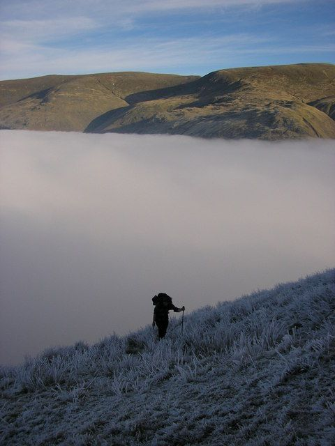

For those that want to stand above the clouds
A cloud inversion is that rare morning when the valleys fill with cloud and the summits rise out of it into sunshine.
Inversions are easy to miss unless you know which morning to go, which peak to climb and what time to set off. Inversion Watch is a personal project by Mo that tries to answer all three, so you don't have to.

How the score works
Several times a day the site collects forecast temperature, humidity and wind at different heights above every peak from Open-Meteo, then scores the dawn conditions on six signals:
| Signal | Weight | Why it matters |
|---|---|---|
| Warm layer above the valley | 30 | The inversion itself: a layer of air warmer than the valley floor, anywhere from the valley up to just above the summit. Full marks at 5°C warmer. Normally the air cools by about 6.5°C for every 1,000 m. |
| Moist valley air | 20 | Without moisture there's no cloud to look down on. |
| Light winds | 15 | Wind mixes the layers and breaks the inversion up. |
| High pressure | 15 | Sinking air puts a lid on the cloud. |
| Cloud top below summit | 10 | Otherwise you're in the cloud, not above it. |
| Clear sky above | 10 | For the view and the light. |
The warm layer is a must. Without it there's nothing to hold the cloud down, so if no layer above the valley is warmer than the valley floor, the score is capped at 20% however good the other signals look. The summit itself doesn't need to be warmer than the valley: with a shallow inversion the lid can sit well below the top, and the air cools again above it.
The weights are a starting point and will be tuned against real sightings. Forecast models smooth out valleys, so the strength of a cold valley pool can be underestimated. Treat the score as a guide to which mornings are worth a closer look, not a promise.
The view from the summit
Each peak page also looks at the view from the summit, worked out from terrain data. It is not part of the percentage: the score says whether there will be a cloud sea, the skyline says how it will look from that top.
- First sun. When the sun actually reaches the summit. Higher hills can hold it back, a cloud sea can too, and from a high top you can sometimes see it a few minutes before the official sunrise.
- The view itself. Where Google Street View (or Mapillary) has a 360° view from the top, you can look round it with the sun's morning path and the hill names placed on it. Elsewhere, a chart shows the sun's path and where the named hills are. The forecast cloud is described in words, because a photo shows the weather on the day it was taken.
- How open the view is. How much of the skyline sits lower than you. A lone top sees far more cloud sea than one tucked in among higher fells.
Data and photo credits
Inversion Watch is built on other people's generous work: weather data, maps, photos and fonts.
Spotted something wrong?
Or saw an inversion the forecast missed? Reports help make the score more accurate.
Report a problemOpen source
The code is free to read and reuse under the MIT licence. See also the privacy notice and terms of use.
View the code on GitHub